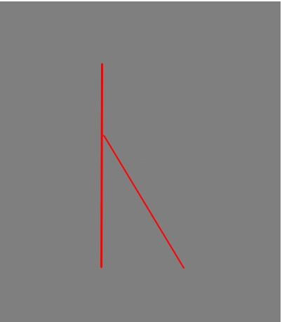

ケン

属性はたいまつに火がついてることじゃら火属性であり、松に火をつけているためスコットランド松なのではないかと考える。
また火は人間が扱うものであり、たいまつを使う人間の知識や、物理的に松明で照らすことを刺しているのではないかと考えられる
神性にフレイヤ神が選ばれた理由としては、フレイヤ神が豊穣神であり、女性としての性的な魅力を強くアピールしていることや戦にも積極的に出ることからではないだろうか。
現れることは暗い場所を明るく照らすことで姿が見えることから現れるという意味が来たのではないかと考える。